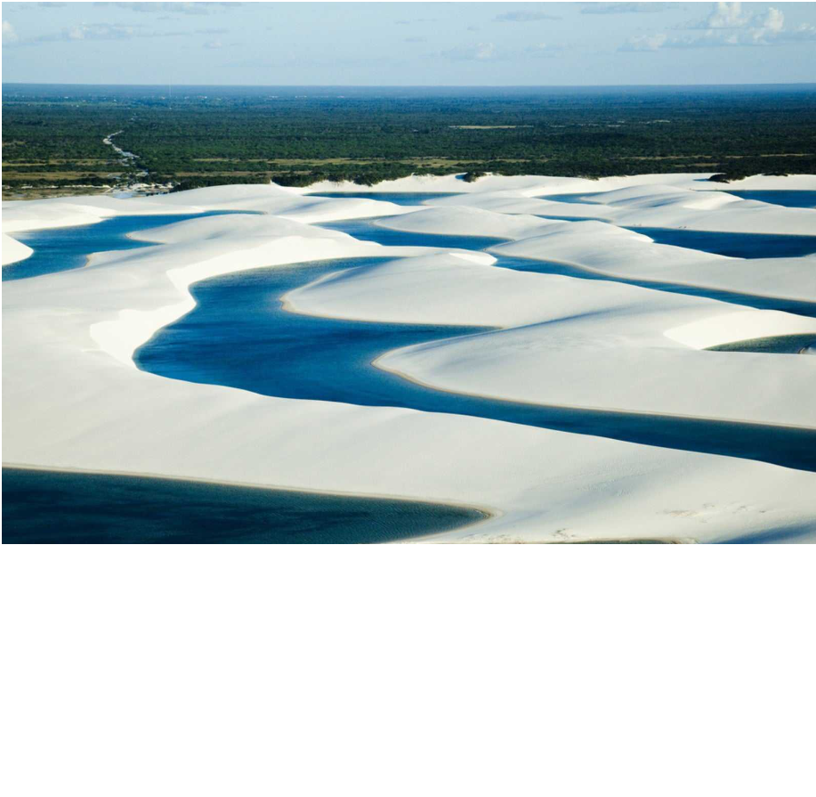
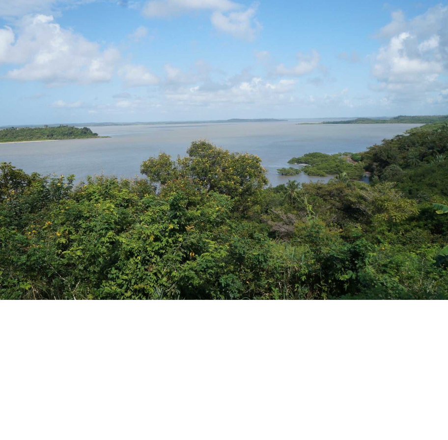

O charme nostálgico do seu patrimônio histórico e a sinfonia de influências que adornam práticas culturais desta região do Brasil, fazem do destino São Luís o lugar ideal para quem busca uma jornada de descoberta de sentidos e percepções. A cidade reúne tradições das heranças africanas, indígenas e européias em sua formação, que se apresentam aos visitantes também na forma de manifestações da cultura popular como o Tambor de Crioula, o Reggae, o Bumba Meu Boi, Blocos Tradicionais, Cacuriá e muito mais. Acredite, aqui você vai encontrar um destino cheio de tradições que encantam e fazem os visitantes voltarem para viver mais e mais da cultura dessa Ilha..
DESTINOS

Lençóis Maranhenses
O Parque Nacional dos Lençóis Maranhenses é uma área protegida na costa atlântica norte do Brasil. É conhecido pela sua vasta paisagem desértica de grandes dunas de areia branca e pelas lagoas sazonais de água da chuva. A Lagoa Azul e a Lagoa Bonita são duas das maiores lagoas.
Ver no MapaCentro Histórico
DO centro histórico de São Luís, localizado na ilha de São Luís do Maranhão, na baía de São Marcos, é um exemplo excepcional de cidade colonial portuguesa adaptada às condições climáticas da América do Sul equatorial, e que tem conservado o tecido urbano harmoniosamente integrado ao ambiente que o cerca.
Ver no Mapa

Alcântara
Alcântara é uma cidade histórica e encantadora localizada no estado do Maranhão, a cerca de 20 quilômetros de São Luís. Fundada no século XVII, Alcântara é um verdadeiro tesouro arquitetônico e cultural, oferecendo uma experiência única para quem deseja mergulhar na história e nas tradições brasileiras.
Ver no Mapa